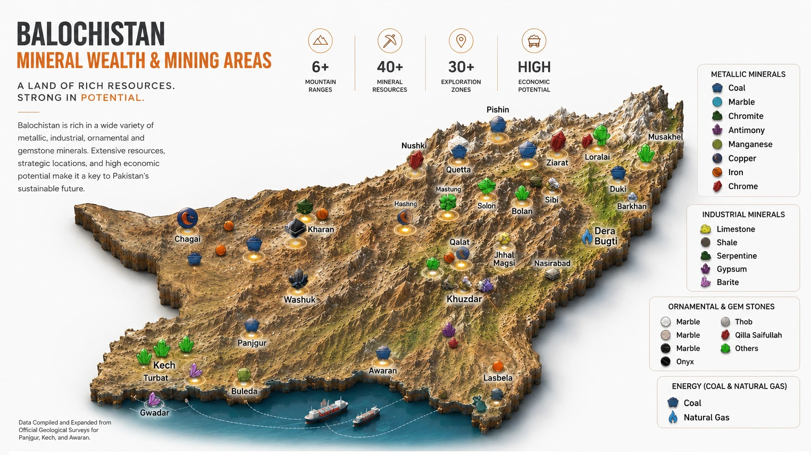

A definitive commercial breakdown of Balochistan’s metallic, industrial, and decorative stone reserves.
Balochistan holds over 50% of Pakistan’s metallic and non-metallic mineral wealth. This comprehensive guide details primary deposit corridors, typical run-of-mine grades, assay ranges, and export shipping logistics via Karachi and Gwadar ports.
Geological Framework
Balochistan’s mineral endowment is rooted in its active tectonic history. The collision of the Indian and Eurasian plates created two world-class metallogenic structures: the Tethyan Magmatic Arc stretching across Western Balochistan (Chagai and Reko Diq), and the Muslim Bagh–Bela Ophiolite Complex running north-to-south through the central highlands.
These distinct geological domains provide an extraordinary concentration of base metals, ferrous ores, critical energy minerals, and industrial raw materials. International procurement teams frequently cite Balochistan’s geographic proximity to major maritime lanes in the Arabian Sea as a major strategic advantage over landlocked Central Asian sources.
1. Metallic Minerals
Metallic ore extraction in Balochistan supplies critical raw materials for international metallurgy, stainless steel, and renewable energy manufacturing:
- Metallurgical Chromite (Cr₂O₃ 42%–52%): Hosted within serpentinized ultramafic rocks of Muslim Bagh and Khanozai. Cr:Fe ratios typically exceed 2.8:1, making it highly prized for high-carbon ferrochrome smelting. Explore our certified Chromite Ore Specification Dossier.
- Porphyry Copper (2%–10%+ Cu): Concentrated within the Chagai magmatic arc (Saindak, Reko Diq). Ore occurs as chalcopyrite and malachite suitable for smelting and flotation. Review the Copper Ore Technical Specification.
- Hematite & Magnetite Iron Ore (Fe 50%–68%): Major deposits located in Dilband, Pachinkoh, and Chigendik for steelmaking and cement kilns. See our Iron Ore Technical Dossier.
- Antimony Stibnite (Sb 35%–58%): High-grade stibnite deposits situated in Washuk, Kharan, and Zhob, providing western buyers an independent supply route. Review the Antimony Ore Technical Dossier.
- Lead-Zinc Sulfide (Pb 60%+, Zn 52%+): Major Sedex deposits in Lasbela and Khuzdar (Duddar mine). Review the Lead-Zinc Sulfide Ore Dossier.
- Manganese Ore (Mn 35%–48%): Metallurgical pyrolusite extracted in Lasbela and Zhob. Explore the Manganese Ore Specification.

2. Industrial & Energy Minerals
Central and southern Balochistan feature massive sedimentary formations that supply global infrastructure, drilling, and chemical industries:
- API-Spec Drilling Barite (BaSO₄ 92%–98%, SG 4.20+): The Khuzdar–Gunga belt hosts over 30 million metric tons of high-density barite meeting strict API 13A standards. Explore our certified Drilling Barite Technical Dossier.
- Acid & Metallurgical Fluorspar (CaF₂ 50%–90%+): Extracted in Koh-e-Maran and Kalat districts for chemical and steel fluxing plants. See our Fluorite / Fluorspar Specification.
- High-Purity Industrial Gypsum (CaSO₄·2H₂O 90%–95%): Open-cast deposits near Spintangi and Sibi serving cement plants and drywall plasterboard production. Review the Industrial Gypsum Specification.
- Sub-Bituminous Steam Coal (5,500–7,200 BTU/lb): Sorange-Degari and Mach basins supplying thermal power generation and industrial kilns. Review the Sub-Bituminous Coal Dossier.
- Refractory Bauxite (Al₂O₃ 45%–62%): Boehmitic/diasporic high-alumina deposits in Dilband and Mastung. Review the Bauxite Ore Technical Dossier.
3. Dimension Stones
Balochistan is internationally renowned for decorative stone quarrying:
- Chagai Green Onyx & Pakistani White Marble: Translucent aragonite/onyx and crystalline white marble quarried in Chagai, Loralai, and Lasbela. Review the certified Balochistan Marble & Green Onyx Specification.
- Imported Iranian Stones (Silver Steam & Pietra Grey): Linear-veined luxury white and charcoal marble slabs and blocks processed through our Hub transit yard. Review the Iranian Silver Steam Marble Specification.
- Granite Stone Blocks & Slabs: High-density igneous granite blocks from Chagai and Nagarparkar. See our Granite Stone Specification Dossier.
Balochistan’s mineral advantage is defined by grade integrity and direct seaport connectivity: from pit-head to FOB Karachi or Gwadar vessel in under 48 hours.
Specifications Directory
Balochistan Minerals maintains certified technical dossiers and lab assays for all primary extracted commodities. International buyers can inspect individual specification pages below:
| Commodity | Primary Grade / Assay | Key Extraction Corridor | Export Seaport Hub | Technical Dossier |
|---|---|---|---|---|
| Chromite Ore | 42% – 52% Cr₂O₃ (Cr:Fe 2.8:1+) | Muslim Bagh, Qila Saifullah | FOB Karachi / Port Qasim | View Chromite Spec → |
| Drilling Barite | SG 4.20+ / 4.10 (BaSO₄ 92–96%) | Khuzdar–Gunga Belt | FOB Karachi / Gwadar | View Barite Spec → |
| Iron Ore | Fe 50% – 64% (Magnetite / Hematite) | Chagai / Dilband (Mastung) | FOB Karachi Port | View Iron Ore Spec → |
| Copper Ore | Cu 2% – 12% (Chalcopyrite / Malachite) | Chagai Magmatic Arc | FOB Karachi / Port Qasim | View Copper Spec → |
| Antimony Ore | Sb 35% – 58% (High-Grade Stibnite) | Washuk / Kharan / Zhob | FOB Karachi Port | View Antimony Spec → |
| Lead-Zinc Ore | Zn 50–55% / Pb 60–70% Concentrates | Lasbela–Khuzdar Sedex Belt | FOB Karachi Port | View Lead-Zinc Spec → |
| Refractory Bauxite | Al₂O₃ 45% – 62% (Boehmite / Diaspore) | Dilband (Mastung) / Loralai | FOB Karachi / Port Qasim | View Bauxite Spec → |
| Fluorite / Fluorspar | CaF₂ 55% – 90%+ (Acid & Met Grade) | Koh-e-Maran / Kalat | FOB Karachi Port | View Fluorite Spec → |
| Industrial Gypsum | CaSO₄·2H₂O 90% – 95% High Purity | Spintangi / Sibi / Barkhan | FOB Karachi / Gwadar | View Gypsum Spec → |
| Sub-Bituminous Coal | 5,500 – 7,200 BTU/lb Low Ash | Sorange-Degari / Mach Basins | Domestic & Regional Rail/Road | View Coal Spec → |
| Balochistan Marble & Onyx | Green Onyx & Calcite White Slabs/Blocks | Chagai / Loralai / Lasbela | FOB Karachi Port | View Marble/Onyx Spec → |
| Iranian Marble Slabs | Silver Steam & Pietra Grey (2cm/3cm) | Isfahan Transit / Hub Staging | FOB Karachi Port Trust | View Iranian Marble → |
| Manganese Ore | Mn 35% – 48% Metallurgical Lumps | Lasbela / Zhob | FOB Karachi Port | View Manganese Spec → |
| Granite Stone | Dimension Blocks & Polished Slabs | Chagai / Nagarparkar | FOB Karachi Port | View Granite Spec → |
Export Hubs & Logistics
Material harvested across interior districts travels via sealed national highways (N-25, N-50, and N-40) to processing hubs in Quetta and Hub Industrial Area before reaching export gates:
- Karachi Port Trust (KPT) & Port Qasim (PQM): The backbone of bulk vessel chartering and containerized freight (FCL) to China, East Asia, and Europe.
- Gwadar Deep-Sea Port (GPA): Emerging strategic gate providing significant transit distance savings for bulk shipments moving across the Arabian Sea to the Middle East and Africa.
Frequently Asked Questions
What are the primary mineral export corridors in Balochistan?
Balochistan's mineral wealth is concentrated along three primary tectonic belts: the Northern Belt (Muslim Bagh, Qila Saifullah, Zhob) producing high-grade chromite and antimony; the Western Chagai Magmatic Arc (Reko Diq, Saindak) holding multi-billion ton porphyry copper-gold and iron ore reserves; and the Central-Southern Belt (Khuzdar, Lasbela, Mastung) producing API-standard barite, Sedex lead-zinc, refractory bauxite, and crystalline marble.
Which seaports handle bulk mineral vessel chartering from Pakistan?
The primary gateways for maritime mineral export are Karachi Port Trust (KPT) and Port Qasim (PQM), which handle both bulk supramax/handymax vessel chartering and containerized freight (FCL). Gwadar Deep-Sea Port (GPA) is rapidly expanding as an alternative deep-draft bulk gate with shorter sailing times to Middle Eastern and African ports.
How do international buyers verify assay purity and grade before container loading?
Every export shipment is sampled in accordance with ISO standards by accredited international inspection firms such as SGS Pakistan, Alfred H Knight, or Alex Stewart International. Inspectors perform composite sampling, moisture analysis, and certified XRF chemical assays at loading yards in Quetta, Hub, and Karachi port.
What Incoterms and payment terms are standard for Pakistani mineral exports?
Standard Incoterms include FOB Karachi / FOB Gwadar (where the supplier clears customs and loads cargo aboard nominated ships) and CFR / CIF destination ports (where ocean freight and marine cargo insurance are pre-arranged). Payment is customarily structured via an Irrevocable Letter of Credit (LC at Sight) confirmed by a tier-one international bank, or Telegraphic Transfer (T/T) against shipping documents.
Commercial Inquiries & Lab Assay Certificates
Balochistan Minerals provides third-party SGS/BV inspection, full lot traceability, and competitive FOB/CFR pricing for all primary commodities.
Request Batch Assay & FOB Quote